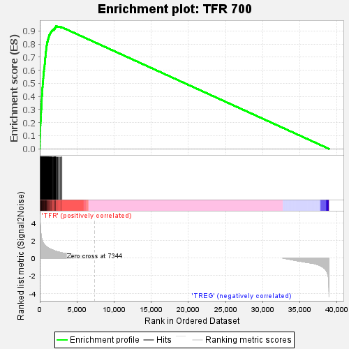
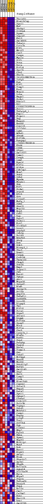
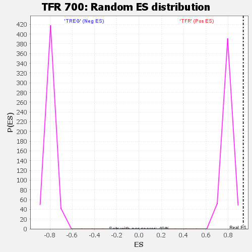

| | | Dataset | tfr_vs_treg_vs_treg.tfr_vs_treg_cls.cls#TFR_versus_TREG |
| Phenotype | tfr_vs_treg_cls.cls#TFR_versus_TREG |
| Upregulated in class | TFR |
| GeneSet | TFR 700 |
| Enrichment Score (ES) | 0.935315 |
| Normalized Enrichment Score (NES) | 1.1708236 |
| Nominal p-value | 0.0 |
| FDR q-value | 0.09979629 |
| FWER p-Value | 0.049 |
Table: GSEA Results Summary

Fig 1: Enrichment plot: TFR 700
Profile of the Running ES Score & Positions of GeneSet Members on the Rank Ordered List
| SYMBOL | TITLE | RANK IN GENE LIST | RANK METRIC SCORE | RUNNING ES | CORE ENRICHMENT | | 1 | Tbc1d31 | na | 6 | 4.766 | 0.0136 | Yes |
| 2 | Hist1h2ap | na | 16 | 4.619 | 0.0268 | Yes |
| 3 | Sgol1 | na | 20 | 4.484 | 0.0397 | Yes |
| 4 | Maf | na | 21 | 4.469 | 0.0526 | Yes |
| 5 | Shcbp1 | na | 27 | 4.390 | 0.0652 | Yes |
| 6 | S100a4 | na | 28 | 4.380 | 0.0778 | Yes |
| 7 | Pgam1 | na | 30 | 4.301 | 0.0903 | Yes |
| 8 | Sapcd2 | na | 37 | 4.189 | 0.1022 | Yes |
| 9 | Ebi3 | na | 45 | 4.040 | 0.1137 | Yes |
| 10 | Gm14005 | na | 52 | 3.982 | 0.1251 | Yes |
| 11 | Tuba1c | na | 53 | 3.965 | 0.1366 | Yes |
| 12 | Coro2b | na | 76 | 3.554 | 0.1463 | Yes |
| 13 | E2f1 | na | 77 | 3.543 | 0.1565 | Yes |
| 14 | Mki67 | na | 78 | 3.532 | 0.1667 | Yes |
| 15 | Cst7 | na | 81 | 3.497 | 0.1768 | Yes |
| 16 | Cenpn | na | 94 | 3.297 | 0.1860 | Yes |
| 17 | Myo1e | na | 99 | 3.251 | 0.1953 | Yes |
| 18 | Pif1 | na | 112 | 3.147 | 0.2041 | Yes |
| 19 | Pcna | na | 118 | 3.094 | 0.2130 | Yes |
| 20 | Dera | na | 131 | 2.984 | 0.2213 | Yes |
| 21 | Kif14 | na | 137 | 2.901 | 0.2296 | Yes |
| 22 | Spc25 | na | 140 | 2.877 | 0.2378 | Yes |
| 23 | Cdc6 | na | 149 | 2.803 | 0.2457 | Yes |
| 24 | Ube2n | na | 153 | 2.772 | 0.2537 | Yes |
| 25 | 2610318N02Rik | na | 154 | 2.772 | 0.2617 | Yes |
| 26 | Itfg3 | na | 157 | 2.757 | 0.2696 | Yes |
| 27 | Ran | na | 166 | 2.629 | 0.2770 | Yes |
| 28 | E2f2 | na | 188 | 2.508 | 0.2837 | Yes |
| 29 | Timp2 | na | 191 | 2.488 | 0.2909 | Yes |
| 30 | Eea1 | na | 194 | 2.441 | 0.2979 | Yes |
| 31 | Mcm10 | na | 206 | 2.382 | 0.3045 | Yes |
| 32 | Lrba | na | 219 | 2.338 | 0.3109 | Yes |
| 33 | Hmgn2 | na | 228 | 2.299 | 0.3174 | Yes |
| 34 | Prdx1 | na | 230 | 2.285 | 0.3240 | Yes |
| 35 | Kdelr2 | na | 233 | 2.276 | 0.3305 | Yes |
| 36 | Dtl | na | 237 | 2.258 | 0.3370 | Yes |
| 37 | C330027C09Rik | na | 240 | 2.243 | 0.3434 | Yes |
| 38 | Prr11 | na | 251 | 2.204 | 0.3495 | Yes |
| 39 | Tnfaip8_1 | na | 252 | 2.202 | 0.3559 | Yes |
| 40 | Espl1 | na | 253 | 2.199 | 0.3623 | Yes |
| 41 | Fignl1 | na | 269 | 2.167 | 0.3681 | Yes |
| 42 | Pnp | na | 270 | 2.167 | 0.3744 | Yes |
| 43 | Maged1 | na | 273 | 2.157 | 0.3806 | Yes |
| 44 | Naa50 | na | 278 | 2.148 | 0.3867 | Yes |
| 45 | Ccp110 | na | 279 | 2.146 | 0.3929 | Yes |
| 46 | Il12rb1 | na | 281 | 2.142 | 0.3991 | Yes |
| 47 | Lgmn | na | 292 | 2.102 | 0.4049 | Yes |
| 48 | Wdhd1 | na | 298 | 2.081 | 0.4108 | Yes |
| 49 | Ahnak | na | 312 | 2.048 | 0.4164 | Yes |
| 50 | Kif20b | na | 316 | 2.036 | 0.4222 | Yes |
| 51 | Rangap1 | na | 325 | 2.016 | 0.4278 | Yes |
| 52 | 1700017B05Rik | na | 326 | 2.013 | 0.4337 | Yes |
| 53 | Ehd4 | na | 327 | 2.009 | 0.4395 | Yes |
| 54 | Cd44 | na | 329 | 2.004 | 0.4452 | Yes |
| 55 | Sfxn1 | na | 331 | 1.996 | 0.4510 | Yes |
| 56 | Gm21972 | na | 338 | 1.984 | 0.4566 | Yes |
| 57 | Lamc1 | na | 356 | 1.942 | 0.4618 | Yes |
| 58 | Cenph | na | 362 | 1.928 | 0.4672 | Yes |
| 59 | Lsm6 | na | 373 | 1.907 | 0.4725 | Yes |
| 60 | Rgs16 | na | 385 | 1.889 | 0.4776 | Yes |
| 61 | Kif2c | na | 388 | 1.882 | 0.4830 | Yes |
| 62 | Aldoa | na | 390 | 1.879 | 0.4884 | Yes |
| 63 | Cdk2ap1 | na | 395 | 1.859 | 0.4937 | Yes |
| 64 | Mcm7 | na | 416 | 1.800 | 0.4984 | Yes |
| 65 | Pnkd | na | 421 | 1.788 | 0.5035 | Yes |
| 66 | Sdhd | na | 430 | 1.776 | 0.5084 | Yes |
| 67 | Myadm | na | 431 | 1.774 | 0.5136 | Yes |
| 68 | Mesdc1 | na | 439 | 1.763 | 0.5185 | Yes |
| 69 | Pbk | na | 454 | 1.738 | 0.5231 | Yes |
| 70 | Etf1 | na | 460 | 1.733 | 0.5280 | Yes |
| 71 | Prdm1 | na | 462 | 1.730 | 0.5330 | Yes |
| 72 | Arpc4 | na | 466 | 1.721 | 0.5379 | Yes |
| 73 | Rfc5 | na | 476 | 1.698 | 0.5426 | Yes |
| 74 | Grn | na | 477 | 1.698 | 0.5475 | Yes |
| 75 | Cited2 | na | 482 | 1.693 | 0.5523 | Yes |
| 76 | Mafg_1 | na | 484 | 1.692 | 0.5572 | Yes |
| 77 | P4hb | na | 497 | 1.672 | 0.5617 | Yes |
| 78 | Gna15 | na | 503 | 1.666 | 0.5664 | Yes |
| 79 | Mrpl51 | na | 514 | 1.652 | 0.5709 | Yes |
| 80 | Nop9 | na | 516 | 1.651 | 0.5757 | Yes |
| 81 | Cd82 | na | 518 | 1.649 | 0.5804 | Yes |
| 82 | Dap | na | 526 | 1.640 | 0.5850 | Yes |
| 83 | Uqcc2 | na | 527 | 1.639 | 0.5897 | Yes |
| 84 | Podnl1 | na | 563 | 1.588 | 0.5934 | Yes |
| 85 | Ect2 | na | 564 | 1.588 | 0.5980 | Yes |
| 86 | Slc43a3 | na | 565 | 1.587 | 0.6026 | Yes |
| 87 | Lcorl | na | 576 | 1.575 | 0.6069 | Yes |
| 88 | Atp5g3 | na | 582 | 1.570 | 0.6113 | Yes |
| 89 | Idh3a | na | 597 | 1.556 | 0.6154 | Yes |
| 90 | Pold3 | na | 600 | 1.553 | 0.6199 | Yes |
| 91 | Ndufb9 | na | 627 | 1.528 | 0.6236 | Yes |
| 92 | Ahcy | na | 642 | 1.515 | 0.6276 | Yes |
| 93 | Dek | na | 647 | 1.511 | 0.6319 | Yes |
| 94 | Pdk3 | na | 650 | 1.509 | 0.6362 | Yes |
| 95 | Hivep3_1 | na | 652 | 1.508 | 0.6406 | Yes |
| 96 | Ybx3 | na | 661 | 1.502 | 0.6447 | Yes |
| 97 | Dnmt1 | na | 668 | 1.499 | 0.6489 | Yes |
| 98 | Cenpm | na | 676 | 1.490 | 0.6530 | Yes |
| 99 | Ccdc34 | na | 686 | 1.482 | 0.6571 | Yes |
| 100 | Tmem160 | na | 688 | 1.479 | 0.6613 | Yes |
| 101 | Ckap5 | na | 691 | 1.475 | 0.6655 | Yes |
| 102 | Stk35 | na | 692 | 1.475 | 0.6698 | Yes |
| 103 | Bmp7 | na | 704 | 1.465 | 0.6738 | Yes |
| 104 | Pcyox1l | na | 714 | 1.452 | 0.6777 | Yes |
| 105 | Ckb | na | 718 | 1.449 | 0.6818 | Yes |
| 106 | Bard1 | na | 723 | 1.439 | 0.6859 | Yes |
| 107 | Ywhae | na | 727 | 1.437 | 0.6900 | Yes |
| 108 | Ahi1 | na | 733 | 1.428 | 0.6940 | Yes |
| 109 | Mrps30 | na | 753 | 1.408 | 0.6976 | Yes |
| 110 | Snrpd2 | na | 756 | 1.407 | 0.7016 | Yes |
| 111 | Blmh | na | 761 | 1.399 | 0.7055 | Yes |
| 112 | Snrnp25 | na | 763 | 1.399 | 0.7095 | Yes |
| 113 | Arl5a | na | 774 | 1.388 | 0.7133 | Yes |
| 114 | Anp32e | na | 776 | 1.387 | 0.7173 | Yes |
| 115 | Tnfsf11 | na | 777 | 1.387 | 0.7213 | Yes |
| 116 | Gadd45b | na | 778 | 1.387 | 0.7253 | Yes |
| 117 | Lrrc59 | na | 792 | 1.371 | 0.7289 | Yes |
| 118 | Dlgap5 | na | 801 | 1.368 | 0.7327 | Yes |
| 119 | Tkt | na | 811 | 1.361 | 0.7364 | Yes |
| 120 | Klf10 | na | 826 | 1.351 | 0.7400 | Yes |
| 121 | Pola1 | na | 830 | 1.347 | 0.7438 | Yes |
| 122 | Ptpn7 | na | 841 | 1.339 | 0.7474 | Yes |
| 123 | Abracl | na | 848 | 1.334 | 0.7511 | Yes |
| 124 | Dtymk | na | 850 | 1.333 | 0.7549 | Yes |
| 125 | Kif20a | na | 855 | 1.330 | 0.7587 | Yes |
| 126 | Spag7 | na | 860 | 1.327 | 0.7624 | Yes |
| 127 | Bora | na | 864 | 1.326 | 0.7662 | Yes |
| 128 | Hif1a | na | 865 | 1.326 | 0.7700 | Yes |
| 129 | Cbx5 | na | 874 | 1.323 | 0.7736 | Yes |
| 130 | Larp1b_1 | na | 875 | 1.322 | 0.7774 | Yes |
| 131 | H2afv | na | 907 | 1.297 | 0.7804 | Yes |
| 132 | Rad51 | na | 919 | 1.287 | 0.7838 | Yes |
| 133 | Pepd | na | 925 | 1.284 | 0.7874 | Yes |
| 134 | Parpbp | na | 938 | 1.274 | 0.7908 | Yes |
| 135 | Paqr4 | na | 950 | 1.266 | 0.7942 | Yes |
| 136 | Dhrs1 | na | 951 | 1.264 | 0.7978 | Yes |
| 137 | Timm13 | na | 962 | 1.256 | 0.8012 | Yes |
| 138 | Gsr | na | 972 | 1.251 | 0.8046 | Yes |
| 139 | Cnbd2 | na | 974 | 1.250 | 0.8082 | Yes |
| 140 | Mif4gd | na | 988 | 1.239 | 0.8114 | Yes |
| 141 | Naa38 | na | 991 | 1.238 | 0.8150 | Yes |
| 142 | Med30 | na | 1038 | 1.208 | 0.8173 | Yes |
| 143 | Pdcd1lg2 | na | 1060 | 1.194 | 0.8202 | Yes |
| 144 | Rnf43 | na | 1062 | 1.193 | 0.8236 | Yes |
| 145 | Gm10143 | na | 1069 | 1.189 | 0.8269 | Yes |
| 146 | Gng2 | na | 1083 | 1.178 | 0.8300 | Yes |
| 147 | Ubl3 | na | 1098 | 1.170 | 0.8330 | Yes |
| 148 | Lamp2 | na | 1101 | 1.169 | 0.8363 | Yes |
| 149 | Crem | na | 1133 | 1.152 | 0.8389 | Yes |
| 150 | Hist1h4i | na | 1140 | 1.149 | 0.8420 | Yes |
| 151 | Capns1 | na | 1160 | 1.144 | 0.8448 | Yes |
| 152 | Stra13 | na | 1175 | 1.134 | 0.8478 | Yes |
| 153 | Hspa5 | na | 1181 | 1.131 | 0.8509 | Yes |
| 154 | Dars2 | na | 1214 | 1.109 | 0.8533 | Yes |
| 155 | Syt11 | na | 1229 | 1.105 | 0.8561 | Yes |
| 156 | Syngr2 | na | 1230 | 1.105 | 0.8593 | Yes |
| 157 | Ctnna1 | na | 1233 | 1.102 | 0.8625 | Yes |
| 158 | Ccdc167 | na | 1240 | 1.099 | 0.8655 | Yes |
| 159 | Polr3k | na | 1247 | 1.096 | 0.8685 | Yes |
| 160 | Topbp1 | na | 1305 | 1.072 | 0.8701 | Yes |
| 161 | Pdcd1 | na | 1322 | 1.064 | 0.8728 | Yes |
| 162 | Mthfd1l | na | 1350 | 1.055 | 0.8751 | Yes |
| 163 | Casp1 | na | 1379 | 1.042 | 0.8774 | Yes |
| 164 | Rnpep | na | 1395 | 1.037 | 0.8800 | Yes |
| 165 | Litaf | na | 1425 | 1.022 | 0.8823 | Yes |
| 166 | Tox2 | na | 1444 | 1.017 | 0.8847 | Yes |
| 167 | Gtf2h4 | na | 1473 | 1.007 | 0.8869 | Yes |
| 168 | Pgp | na | 1496 | 0.997 | 0.8892 | Yes |
| 169 | Clstn1 | na | 1509 | 0.992 | 0.8918 | Yes |
| 170 | Nhp2 | na | 1526 | 0.985 | 0.8942 | Yes |
| 171 | Egln3 | na | 1585 | 0.963 | 0.8955 | Yes |
| 172 | Hmbs | na | 1592 | 0.959 | 0.8981 | Yes |
| 173 | Ppme1 | na | 1597 | 0.958 | 0.9008 | Yes |
| 174 | Nup93 | na | 1646 | 0.944 | 0.9023 | Yes |
| 175 | Mid1ip1 | na | 1685 | 0.931 | 0.9040 | Yes |
| 176 | Manf | na | 1693 | 0.928 | 0.9065 | Yes |
| 177 | Dck | na | 1770 | 0.905 | 0.9072 | Yes |
| 178 | Nacc1 | na | 1858 | 0.878 | 0.9075 | Yes |
| 179 | Ripk3 | na | 1880 | 0.869 | 0.9094 | Yes |
| 180 | Akip1 | na | 1883 | 0.867 | 0.9119 | Yes |
| 181 | Hras | na | 1916 | 0.858 | 0.9136 | Yes |
| 182 | Phactr2 | na | 1960 | 0.843 | 0.9149 | Yes |
| 183 | Ap3s1 | na | 2002 | 0.829 | 0.9162 | Yes |
| 184 | Phgdh | na | 2013 | 0.826 | 0.9184 | Yes |
| 185 | Bcl2a1b | na | 2022 | 0.823 | 0.9205 | Yes |
| 186 | Agpat4 | na | 2025 | 0.823 | 0.9229 | Yes |
| 187 | Slc25a39 | na | 2070 | 0.809 | 0.9241 | Yes |
| 188 | Rpia | na | 2072 | 0.809 | 0.9264 | Yes |
| 189 | Mrps7 | na | 2120 | 0.797 | 0.9275 | Yes |
| 190 | Ptprs | na | 2132 | 0.794 | 0.9295 | Yes |
| 191 | Tnfrsf8 | na | 2140 | 0.791 | 0.9316 | Yes |
| 192 | Dnajc9 | na | 2151 | 0.787 | 0.9336 | Yes |
| 193 | Fdps | na | 2174 | 0.783 | 0.9353 | Yes |
| 194 | Bcl7c | na | 2272 | 0.755 | 0.9350 | No |
| 195 | Cmc2 | na | 2406 | 0.718 | 0.9336 | No |
| 196 | Calhm2 | na | 2544 | 0.682 | 0.9321 | No |
| 197 | Rnh1 | na | 2606 | 0.670 | 0.9324 | No |
| 198 | Unc119 | na | 2754 | 0.643 | 0.9305 | No |
| 199 | Ddx1 | na | 2962 | 0.600 | 0.9269 | No |
| 200 | Gm10259 | na | 2964 | 0.599 | 0.9286 | No |
Table: GSEA details [plain text format]

Fig 2: TFR 700
Blue-Pink O' Gram in the Space of the Analyzed GeneSet

Fig 3: TFR 700: Random ES distribution
Gene set null distribution of ES for TFR 700